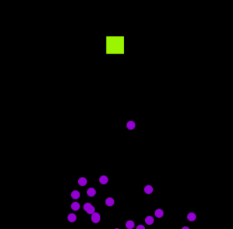
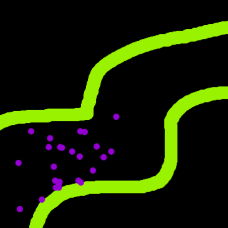
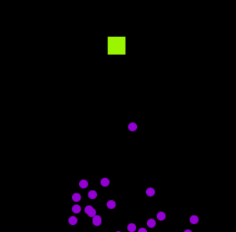
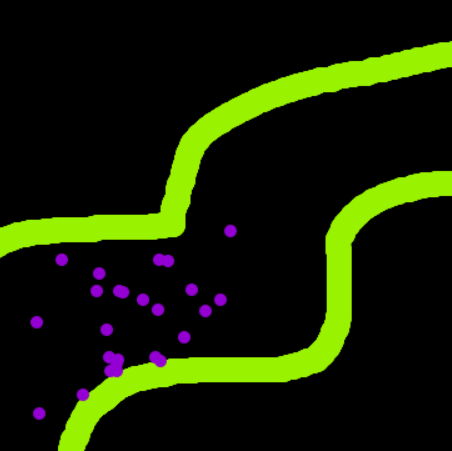
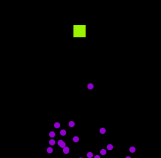
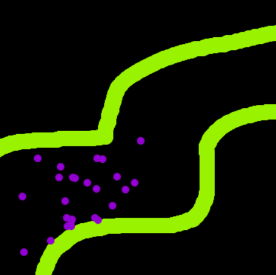

.
.
 
Simulation Settings
Press 'Apply' to finish configuring your simulation!
Initial Population Size
Number of organisms to create for first generation of simulation (<1000)
Movement Speed
Relative-maximum distance an organism can travel in one movement (1-5)
Mutation Rate %
Target percentage of genes to be mutated in offspring organisms (recommended: 2.0 - 4.0%)
Resilience %
Percent chance an organism will survive if boundary touched (0-100%)
Population Growth
Constant
'Constant' = parent organisms always reproduce offspring equal to the initial population size
'Fluctuate' = population sizes may vary from generation to generation
Dialogue
Un-check to run simulation without additional descriptions / animations
Start
Select Classic
Select Boundary
Continue
Apply Boundary
Apply
Skip Introduction
Run Simulation
Stop Simulation
 


